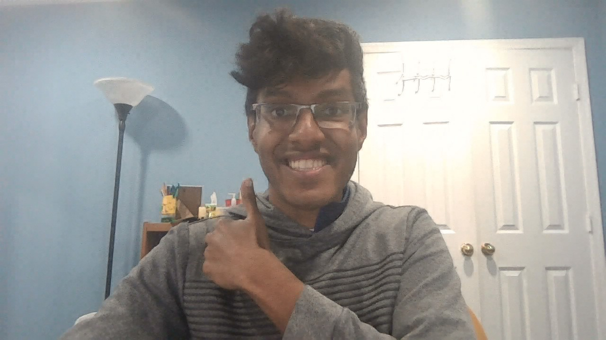

My Resume

Summary
Aspiring computer scientist with 3+ experience in front end and back end programming languages.
Education
- Virginia Tech (2021-2023)
- University of Maryland Baltimore County (2024-2025)
Work Experience
- Howard Community College (2022-present)
- Math and Computer Science Tutor
- Worked with students to develop their understanding of
advanced math topics and programming languages
- Collaborated with tutors to help improve our understanding of the subject matter
Skills
- Created a Hotel Booking Project
- Created an Object-oriented application using Java, utilizing various data structures, to execute
hotel bookings. Created small reusable libraries and used a Test Driven Development (TDD)
approach (with JUnit tests). Created effective pseudocode, flowcharts (using Visio) and end user
documentation
About Me
Contact